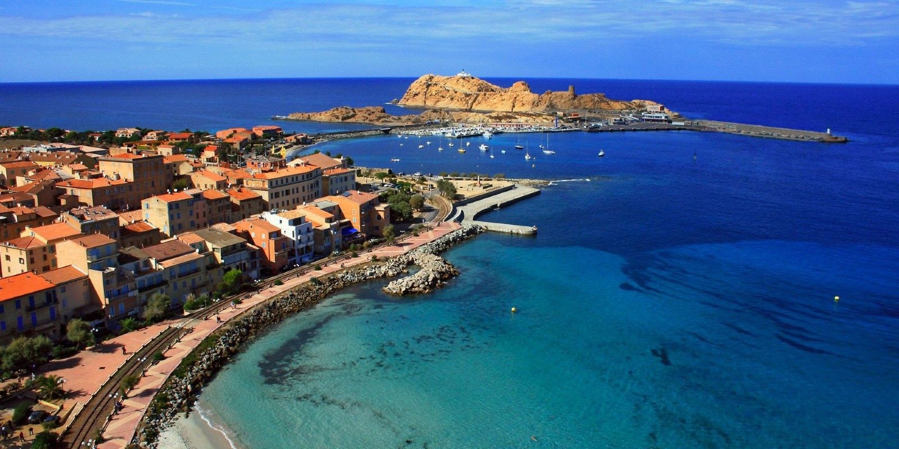

A Jean Reno és Christian Clavier főszereplésével készült kultikus francia vígjáték, A korzikai akta (*L'Enquête corse*) egyik legnagyobb kulisszatitka ehhez a városhoz kötődik. Bár a film cselekménye szerint a párizsi nyomozó a sziget nyüzsgő fővárosába, Ajaccióba érkezik meg, a stáb a logisztikai nehézségek és a sűrű forgalom miatt a jelenetek jelentős részét valójában L'Île-Rousse-ban forgatta le. A rendezők zseniálisan használták ki a városka elegáns, pálmafás tengerparti sétányait és a jellegzetes építészeti elemeket, amelyek a kamerák lencséjén keresztül a gyanútlan néző számára tökéletesen megteremtették a dél-korzikai metropolisz illúzióját.
A forgatás abszolút központja a város lüktető szíve, a hatalmas, platánfákkal szegélyezett Paoli tér (Place Paoli) és a belőle nyíló hangulatos utcák voltak. A film azon emlékezetes pillanatai, amikor Christian Clavier karaktere a korzikai mindennapok sajátos dinamikájával, a teraszokon ücsörgő, sokatmondóan hallgató helyiekkel és a maffia hálózatával ismerkedik, szinte kivétel nélkül itt keltek életre. A tér nyitottsága, a kávézók sora és a háttérben magasodó neoklasszicista épületek olyan természetes, mégis teátrális színpadot biztosítottak a film komikus jeleneteinek, amelyet egyetlen épített stúdió sem tudott volna ilyen hűen visszaadni.
L'Île-Rousse-t a sziget többi, genovaiak által alapított városával ellentétben maga a korzikai nemzeti hős, Pasquale Paoli alapította 1758-ban, kifejezetten azzal a céllal, hogy megtörje a közeli Calvi genovai dominanciáját. Ez a büszke történelmi múlt tükröződik a szabályos, tágas utcaszerkezeten és a monumentális tereken, amelyek ma is különleges, elegáns karaktert kölcsönöznek a helynek. Az ide látogató mozirajongók és utazók egyszerre élvezhetik a fehér homokos strandok mediterrán luxusát és azt a popkulturális örökséget, amely a mai napig összeköti a várost a modern francia filmművészet legszórakoztatóbb pillanataival.